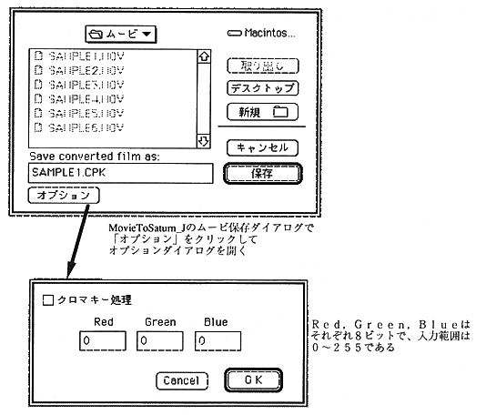

Note: Superimposed movies are fingered by Cinepak compression. The color changes to a fixed color and cannot be keyed out cleanly. in this case, Use the CPK_SetKeyOutRange function to adjust the color range to be keyed out.